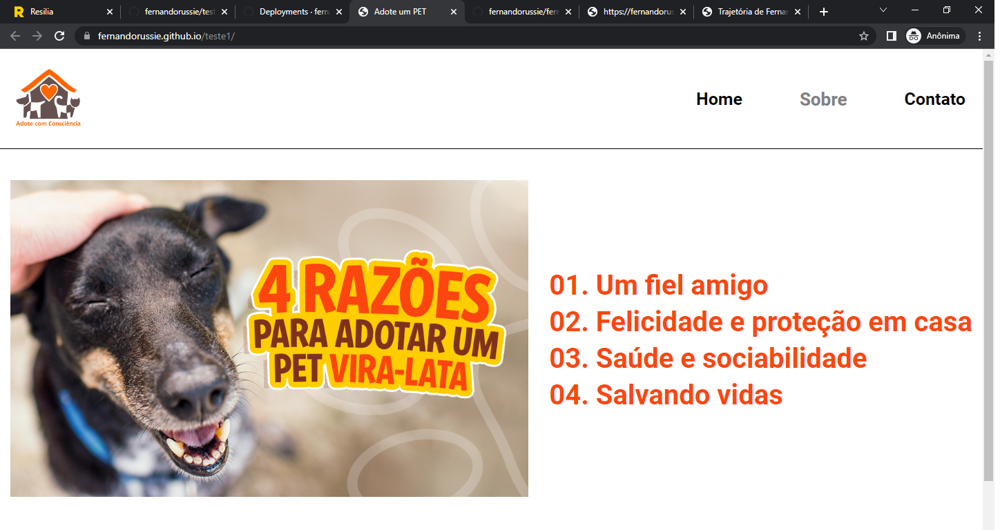

Olá, meu nome é Fernando Cesar!
Você é capaz de tudo!
Na minha trajetória até aqui, eu aprendi:
- Aprendi sobre o mercado de trabalho
- Conheci o Scratch
- Logica de programação e estrutura de decissão junto ao Scratch
- Mercado de trabalho, Empregabilidade, Postura profissional e auto responsabilização
- Laço de repetição e criei um jogo no Scratch
- Estrutura visual e HTML
- Documentação
- Tags iniciais
- Atributos
- Portifólio
- VSCode
Meus primeiro projeto online

Lugar que eu gosto: